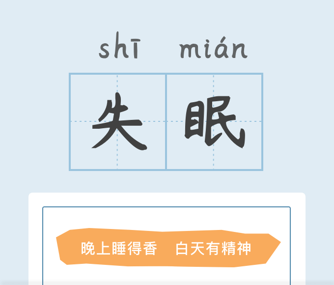

-
问卷简介匹兹堡睡眠质量指数适用于睡眠障碍患者、精神障碍患者评价睡眠质量，同时也适用于一般人睡眠质量的评估。
-
评估依据匹兹堡睡眠质量指数（Pittsburgh sleep quality index,PSQI）
31万+人完成
约3分钟
匹兹堡睡眠质量指数适用于睡眠障碍患者、精神障碍患者评价睡眠质量，同时也适用于一般人睡眠质量的评估。
{{switcherTxt}}
专家意见仅供参考，不代表医生诊断